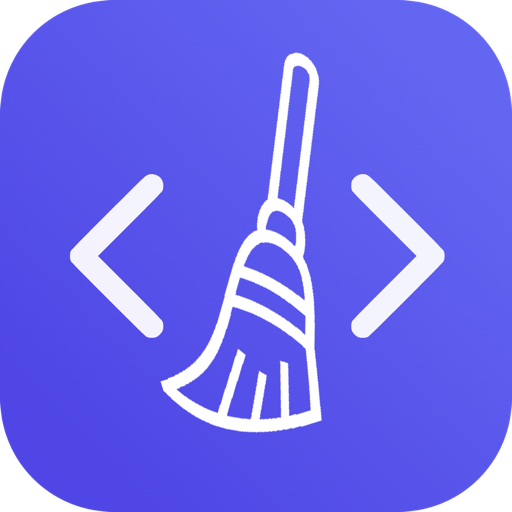

DevCleaner
Reclaim the disk space your development tools left behind — and know what you are deleting before you delete it.
DevCleaner deletes files. It always scans first and shows you what it found; nothing is removed until you choose it. Items that cannot be recovered are marked as such and ask for a second confirmation.
It works entirely on your Mac. There is no account, no network code in the app, and nothing it finds is sent anywhere.
What it is
A developer's Mac fills up in places Finder never shows you: package-manager caches, SDK downloads, simulator runtimes, build artefacts, virtual-machine images, model weights. DevCleaner knows where those live for the tools you actually have installed, scans them, and lays out what it found with a size against each one.
The point is not just the number. Every item says why it is safe to remove and what happens afterwards — whether the tool rebuilds it on its own, downloads it again when needed, or cannot get it back — so you can clear what costs you nothing and leave what would cost you an afternoon.
Features
Knows the tools
Homebrew, npm, pip, Docker, Xcode, CocoaPods, Gradle, fvm, Android SDK and emulators, iOS simulators, JetBrains, Hugging Face, pub, bun, uv, Go — and VM images from UTM, Parallels, and Docker.
Explains every item
A plain-language reason it can go, and a badge for what comes next: rebuilt automatically, downloaded again, or not recoverable.
Preview before delete
Scan first, always. You pick what goes. Irreversible items get an extra confirmation step.
Local and free
No account, no telemetry, no network code. Signed with a Developer ID and notarized by Apple.
Screenshots
Download
This release
- Version
- 0.1.10
- Released
- 2026-09-12
- File
DevCleaner_0.1.10_aarch64.dmg- Size
- 6.5 MB
- Architecture
- Apple Silicon (arm64)
- Signing
- Developer ID, notarized and stapled
Install
- Open the downloaded DMG.
- Drag DevCleaner to your Applications folder.
- Launch it. It is notarized, so it opens without a Gatekeeper warning.
When a scan first reaches your Desktop, Documents, Downloads, or an external volume, macOS asks whether to allow it. Say no and DevCleaner simply skips that location.
SHA-256 checksum
Verify your download with shasum -a 256 DevCleaner_0.1.10_aarch64.dmg and compare:
e8826b50654a1e1c6ebaec96b3b0e3ab3d52a4d7e980d482ef6cbb695a825505What's new in 0.1.10
- Notarized by Apple — no “unidentified developer” warning after download.
- Much wider coverage: VM images (UTM, Parallels, Docker), Android SDK and emulators, iOS simulators, JetBrains, Hugging Face, and the pub / bun / uv / Go caches. On a test machine, 77 GB detected became 530 GB.
- Every item now carries a reason it can go and a badge for what happens next.
- A confirmation step before deleting anything that cannot be recovered.
- Dashboard layout fixes and better contrast in light mode.
Requirements
- macOS 10.15 or later
- Apple Silicon Mac — this build is arm64 only
- Distributed outside the Mac App Store — signed with a Developer ID and notarized by Apple, so Gatekeeper opens it without warnings